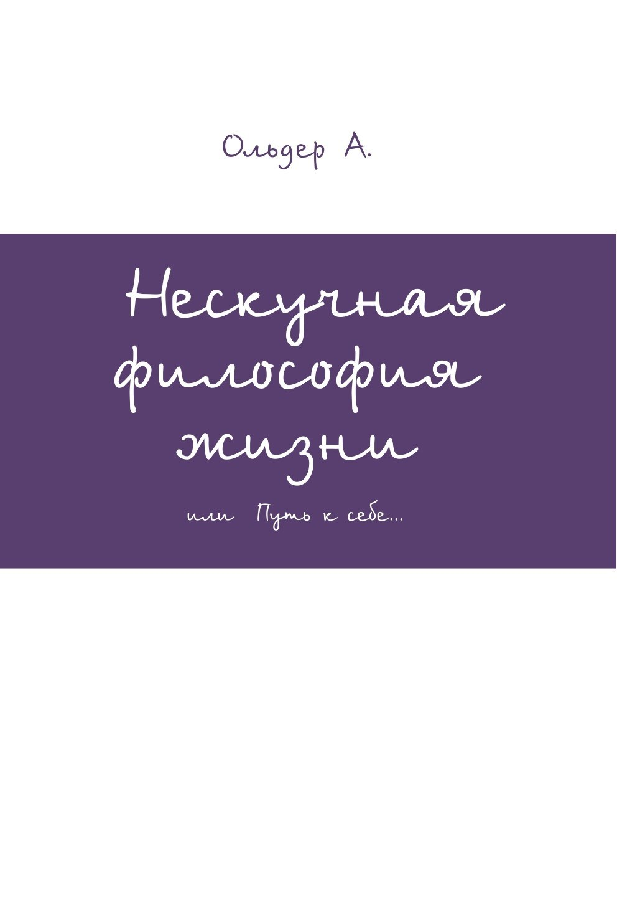

A. Older · Анна Ольдер
Я не учу людей жить.
Я создаю инструменты, которые помогают услышать себя и самим решить, куда идти дальше.
вот как живу я, а вы решайте сами
Немного обо мне
Мама троих детей. Когда-то — офис и жизнь по чужому расписанию. Сейчас — удалённая работа, жизнь с детьми в разных странах и собственные проекты.
Я не идеальна и не собираюсь такой казаться. Я пробую строить жизнь не по шаблону и показываю, что из этого получается. Так сформировался мой авторский подход, а потом и система ориентиров: книга, блокноты и скоро приложение.
и кто знает, что меня ещё ждёт…
то, на чём держится всё остальное
Нескучная философия жизни
01
Начать с себя
Перемены начинаются не с мира вокруг, а с того, как вы смотрите на себя и что ощущаете внутри.
02
Свои желания — не чужие
Отличить то, чего хотите вы, от того, чего от вас ждут.
03
Жизнь — это динамика
Качество жизни — не набор правильных ответов, а движение, которое можно отслеживать и корректировать.

с чего всё началось
Нескучная философия жизни
или Путь к себе
Книга о том, как лучше понять эту жизнь и разобраться в себе без нравоучений: с примерами из жизни и практическим заданием в завершение. В ней вы найдёте то, о чём, возможно, никогда раньше не задумывались.
несколько строк из книги
«Думаю, многие из вас слышали про кризисы того или иного возраста. Про кризис среднего возраста точно должны были слышать…»
«Душа всегда знает, в каком теле ей предстоит прожить земную жизнь. Наши души сами выбирают себе тело, гендерную принадлежность и события в жизни, чтобы пройти нужные им уроки, а души-наставники корректируют, если требуется, выбранную вами жизнь.»
«С детьми нужно научиться не только разговаривать, но и договариваться. Это очень важно. Они такие же члены нашего общества, как и вы сами, только возрастом поменьше. Если вы не будете с ними договариваться, то период простого подчинения их вам очень быстро закончится. Ни одно принуждение не вечно.»
«Совсем не обязательно, что первый, кого, как вы думаете, вы полюбили, будет именно этой безусловной любовью. Это стереотип, навязанный нам обществом.» «…мы совершенно не обманываем друг друга, когда говорим „люблю“ не одному человеку в своей жизни. Мы, действительно, в какой-то мере любим каждого, кому мы произносим эти слова, и готовы к дальнейшему сотрудничеству в виде создания семьи.» «…одним из побуждений к созданию семьи может послужить любовь, но не всегда.»
сначала на бумаге
Как философия стала системой ориентиров
Моя философия никогда не задумывалась как набор правил для других. Это мой авторский подход к жизни. Со временем из него выросла система ориентиров — книга, блокноты и скоро приложение, которые помогают человеку лучше услышать себя и самому выбрать направление.
01
Книга
Философия и авторский подход, изложенные словами. Пробный тираж книги на русском языке разошёлся.
02
Блокноты
Блокнот для выполнения целей и ежедневник «Начни с себя». Пробный тираж блокнотов на русском языке разошёлся.
03
Приложение · скоро
Lead your Dream™ — система ориентиров, которая всегда под рукой.
Первые отзывы читателей книги и покупателей блокнотов
4,9 · 13 отзывов · Wildberries и Литрес